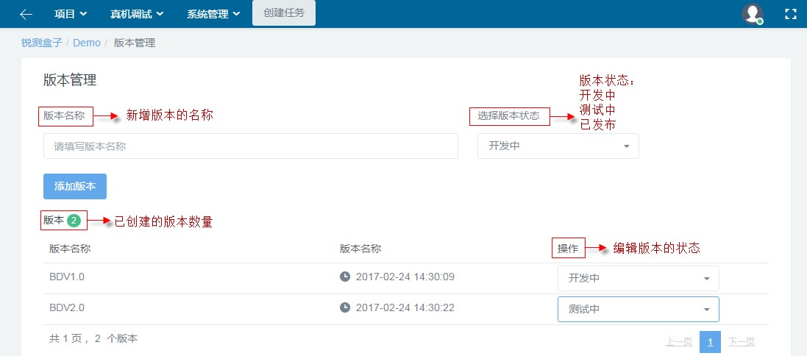

1.4.3 版本管理
在本系统中，测试运行包需要进行版本划分，不同阶段的运行包对应不同版本。版本管理中提供三种版本状态：开发中、测试中、已发布，用来管理不同开发阶段的App包。如下图所示。

项目的版本管理页面图
在本系统中，测试运行包需要进行版本划分，不同阶段的运行包对应不同版本。版本管理中提供三种版本状态：开发中、测试中、已发布，用来管理不同开发阶段的App包。如下图所示。
项目的版本管理页面图